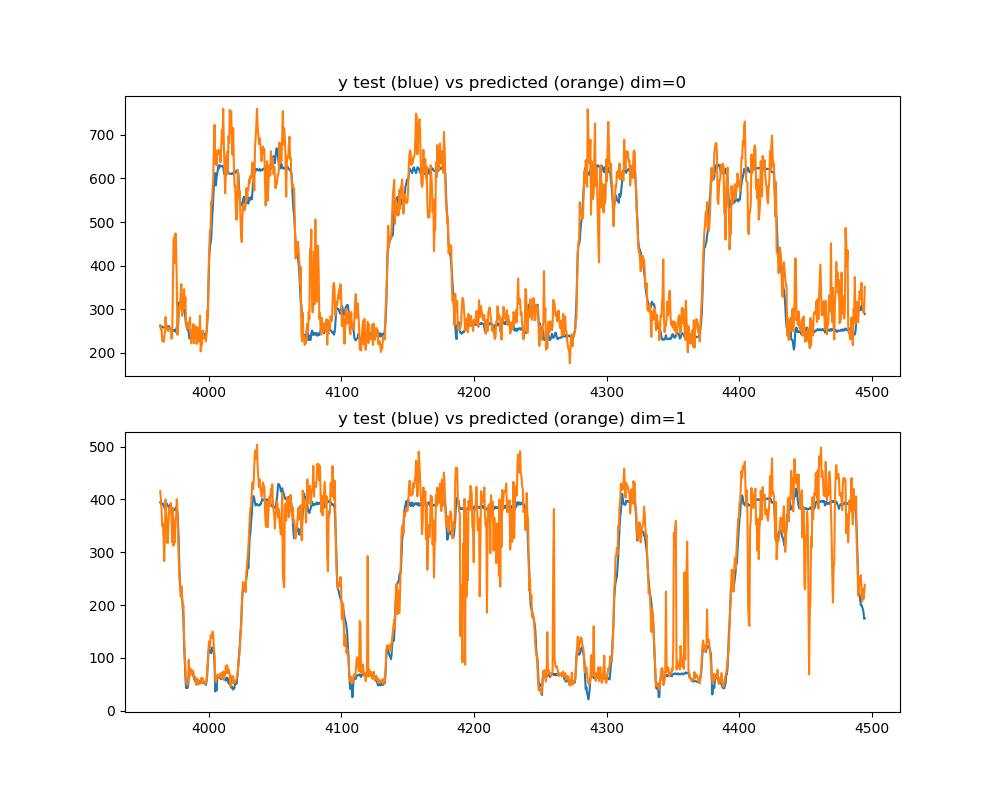
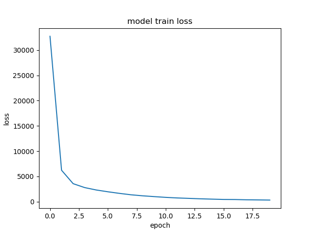

<!DOCTYPE html>
<!--[if IE 8]><html class="no-js lt-ie9" lang="en" > <![endif]-->
<!--[if gt IE 8]><!--> <html class="no-js" lang="en" > <!--<![endif]-->
<head>
  <meta charset="utf-8">
  
  <meta name="viewport" content="width=device-width, initial-scale=1.0">
  
  <title>Decoding single valued position from firing rates with a dense neural network &mdash; mlneuro 1.0 documentation</title>
  

  
  
  
  

  

  
  
    

  

  <link rel="stylesheet" href="../../../_static/css/theme.css" type="text/css" />
  <link rel="stylesheet" href="../../../_static/pygments.css" type="text/css" />
  <link rel="stylesheet" href="../../../_static/gallery.css" type="text/css" />
    <link rel="index" title="Index" href="../../../genindex.html" />
    <link rel="search" title="Search" href="../../../search.html" />
    <link rel="next" title="Decoding position from firing rates with a LSTM recurrent neural network from Keras" href="plot_recurrent_lstm.html" />
    <link rel="prev" title="Clustered spike decoding examples" href="index.html" />
    <link href="../../../_static/style.css" rel="stylesheet" type="text/css">


  
  <script src="../../../_static/js/modernizr.min.js"></script>

</head>

<body class="wy-body-for-nav">

   
  <div class="wy-grid-for-nav">

    
    <nav data-toggle="wy-nav-shift" class="wy-nav-side">
      <div class="wy-side-scroll">
        <div class="wy-side-nav-search">
          

          
            <a href="../../../index.html" class="icon icon-home"> mlneuro
          

          
          </a>

          
            
            
          

          
<div role="search">
  <form id="rtd-search-form" class="wy-form" action="../../../search.html" method="get">
    <input type="text" name="q" placeholder="Search docs" />
    <input type="hidden" name="check_keywords" value="yes" />
    <input type="hidden" name="area" value="default" />
  </form>
</div>

          
        </div>

        <div class="wy-menu wy-menu-vertical" data-spy="affix" role="navigation" aria-label="main navigation">
          
            
            
              
            
            
              <ul class="current">
<li class="toctree-l1"><a class="reference internal" href="../../../guide.html">User Guide</a></li>
<li class="toctree-l1"><a class="reference internal" href="../../../api.html">API Reference</a></li>
<li class="toctree-l1 current"><a class="reference internal" href="../../../examples_head.html">Examples</a><ul class="current">
<li class="toctree-l2"><a class="reference internal" href="../clusterless/index.html">Clusterless decoding examples</a></li>
<li class="toctree-l2 current"><a class="reference internal" href="index.html">Clustered spike decoding examples</a><ul class="current">
<li class="toctree-l3 current"><a class="current reference internal" href="#">Decoding single valued position from firing rates with a dense neural network</a><ul>
<li class="toctree-l4"><a class="reference internal" href="#preprocessing">Preprocessing</a></li>
<li class="toctree-l4"><a class="reference internal" href="#estimation">Estimation</a></li>
<li class="toctree-l4"><a class="reference internal" href="#plotting">Plotting</a></li>
</ul>
</li>
<li class="toctree-l3"><a class="reference internal" href="plot_recurrent_lstm.html">Decoding position from firing rates with a LSTM recurrent neural network from Keras</a></li>
<li class="toctree-l3"><a class="reference internal" href="plot_sgd_multioutput.html">Decoding position from firing rates with sklearn’s support gradient descent linear model</a></li>
<li class="toctree-l3"><a class="reference internal" href="plot_custom_firing_rate_bins.html">Decoding position from firing rates where bins are different sizes and non-contiguous</a></li>
<li class="toctree-l3"><a class="reference internal" href="plot_binned_densenn.html">Decoding binned position probabilities from firing rates with a dense neural network</a></li>
<li class="toctree-l3"><a class="reference internal" href="plot_bayes_poisson.html">Decoding binned probabilties from firing rates with naive bayes inversion of poisson tuning curves</a></li>
<li class="toctree-l3"><a class="reference internal" href="plot_bayes_poisson_glm.html">Decoding binned position probabilties from firing rates with naive bayes inversion of a poisson GLM</a></li>
<li class="toctree-l3"><a class="reference internal" href="plot_regressor_comparison.html">Comparison of multiple regression techniques applied to clustered data</a></li>
</ul>
</li>
</ul>
</li>
</ul>

            
          
        </div>
      </div>
    </nav>

    <section data-toggle="wy-nav-shift" class="wy-nav-content-wrap">

      
      <nav class="wy-nav-top" aria-label="top navigation">
        
          <i data-toggle="wy-nav-top" class="fa fa-bars"></i>
          <a href="../../../index.html">mlneuro</a>
        
      </nav>


      <div class="wy-nav-content">
        
        <div class="rst-content">
        
          


<div role="navigation" aria-label="breadcrumbs navigation">

  <ul class="wy-breadcrumbs">
    
      <li><a href="../../../index.html">Docs</a> &raquo;</li>
        
          <li><a href="../../../examples_head.html">Examples</a> &raquo;</li>
        
          <li><a href="index.html">Clustered spike decoding examples</a> &raquo;</li>
        
      <li>Decoding single valued position from firing rates with a dense neural network</li>
    
    
      <li class="wy-breadcrumbs-aside">
        
            
            <a href="../../../_sources/generated/examples/clustered/plot_basic_densenn.rst.txt" rel="nofollow"> View page source</a>
          
        
      </li>
    
  </ul>

  
  <hr/>
</div>
          <div role="main" class="document" itemscope="itemscope" itemtype="http://schema.org/Article">
           <div itemprop="articleBody">
            
  <div class="sphx-glr-download-link-note admonition note">
<p class="first admonition-title">Note</p>
<p class="last">Click <a class="reference internal" href="#sphx-glr-download-generated-examples-clustered-plot-basic-densenn-py"><span class="std std-ref">here</span></a> to download the full example code</p>
</div>
<div class="sphx-glr-example-title section" id="decoding-single-valued-position-from-firing-rates-with-a-dense-neural-network">
<span id="sphx-glr-generated-examples-clustered-plot-basic-densenn-py"></span><h1>Decoding single valued position from firing rates with a dense neural network<a class="headerlink" href="#decoding-single-valued-position-from-firing-rates-with-a-dense-neural-network" title="Permalink to this headline">¶</a></h1>
<p>A dense Keras neural network is used to output a single value from binned
neural firing rates.</p>
<div class="section" id="preprocessing">
<h2>Preprocessing<a class="headerlink" href="#preprocessing" title="Permalink to this headline">¶</a></h2>
<ol class="arabic simple">
<li>Time is binned over the range of the data</li>
</ol>
<p>2. Spike times and associated cell-ids are used to construct a firing-rate matrix
which is normalized to the maximum firing rate of the cell and includes several
bins before and after the current bin
3. Stimulus values are retrieved at the spike times
4. Variables are split into independent training and test sets</p>
</div>
<div class="section" id="estimation">
<h2>Estimation<a class="headerlink" href="#estimation" title="Permalink to this headline">¶</a></h2>
<ol class="arabic simple">
<li>A pipeline is constructed with a StandardScaler and DenseNNRegressor with default settings</li>
<li>A single value is estimated for each sample (per dimension)</li>
</ol>
</div>
<div class="section" id="plotting">
<h2>Plotting<a class="headerlink" href="#plotting" title="Permalink to this headline">¶</a></h2>
<p>The predicted value and true value are compared</p>
<ul class="sphx-glr-horizontal">
<li>
</li>
<li>
</li>
</ul>
<p class="sphx-glr-script-out">Out:</p>
<div class="sphx-glr-script-out highlight-none notranslate"><div class="highlight"><pre><span></span>Epoch 1/20

  32/6026 [..............................] - ETA: 21s - loss: 169196.1562 - acc: 0.8750
1024/6026 [====&gt;.........................] - ETA: 0s - loss: 122992.6569 - acc: 0.9180 
1824/6026 [========&gt;.....................] - ETA: 0s - loss: 80272.3964 - acc: 0.9030 
2624/6026 [============&gt;.................] - ETA: 0s - loss: 60306.6866 - acc: 0.9009
3328/6026 [===============&gt;..............] - ETA: 0s - loss: 50292.7754 - acc: 0.8987
4160/6026 [===================&gt;..........] - ETA: 0s - loss: 42393.5682 - acc: 0.9019
4928/6026 [=======================&gt;......] - ETA: 0s - loss: 37588.7960 - acc: 0.9016
5760/6026 [===========================&gt;..] - ETA: 0s - loss: 33739.7199 - acc: 0.9005
6026/6026 [==============================] - 0s - loss: 32744.2737 - acc: 0.8994
Epoch 2/20

  32/6026 [..............................] - ETA: 0s - loss: 9924.8906 - acc: 0.8750
 896/6026 [===&gt;..........................] - ETA: 0s - loss: 9685.1688 - acc: 0.9029
1728/6026 [=======&gt;......................] - ETA: 0s - loss: 8752.8975 - acc: 0.9045
2592/6026 [===========&gt;..................] - ETA: 0s - loss: 8038.5370 - acc: 0.9055
3424/6026 [================&gt;.............] - ETA: 0s - loss: 7435.1962 - acc: 0.9124
4288/6026 [====================&gt;.........] - ETA: 0s - loss: 6889.4300 - acc: 0.9216
5088/6026 [========================&gt;.....] - ETA: 0s - loss: 6559.6441 - acc: 0.9261
5856/6026 [============================&gt;.] - ETA: 0s - loss: 6262.1032 - acc: 0.9303
6026/6026 [==============================] - 0s - loss: 6221.9536 - acc: 0.9311
Epoch 3/20

  32/6026 [..............................] - ETA: 0s - loss: 3936.2759 - acc: 0.9375
 928/6026 [===&gt;..........................] - ETA: 0s - loss: 3656.9186 - acc: 0.9677
1760/6026 [=======&gt;......................] - ETA: 0s - loss: 3680.7423 - acc: 0.9665
2624/6026 [============&gt;.................] - ETA: 0s - loss: 3669.1282 - acc: 0.9649
3488/6026 [================&gt;.............] - ETA: 0s - loss: 3633.6617 - acc: 0.9639
4384/6026 [====================&gt;.........] - ETA: 0s - loss: 3552.1903 - acc: 0.9649
5312/6026 [=========================&gt;....] - ETA: 0s - loss: 3597.7376 - acc: 0.9674
6026/6026 [==============================] - 0s - loss: 3564.0375 - acc: 0.9686
Epoch 4/20

  32/6026 [..............................] - ETA: 0s - loss: 2255.9155 - acc: 1.0000
 768/6026 [==&gt;...........................] - ETA: 0s - loss: 2590.8096 - acc: 0.9753
1600/6026 [======&gt;.......................] - ETA: 0s - loss: 2747.8494 - acc: 0.9788
2464/6026 [===========&gt;..................] - ETA: 0s - loss: 2806.0718 - acc: 0.9801
3296/6026 [===============&gt;..............] - ETA: 0s - loss: 2806.1995 - acc: 0.9797
4192/6026 [===================&gt;..........] - ETA: 0s - loss: 2833.6379 - acc: 0.9785
5056/6026 [========================&gt;.....] - ETA: 0s - loss: 2830.5622 - acc: 0.9784
5856/6026 [============================&gt;.] - ETA: 0s - loss: 2782.2632 - acc: 0.9788
6026/6026 [==============================] - 0s - loss: 2786.2400 - acc: 0.9789
Epoch 5/20

  32/6026 [..............................] - ETA: 0s - loss: 1319.7969 - acc: 1.0000
 800/6026 [==&gt;...........................] - ETA: 0s - loss: 2267.7949 - acc: 0.9812
1728/6026 [=======&gt;......................] - ETA: 0s - loss: 2369.9067 - acc: 0.9792
2688/6026 [============&gt;.................] - ETA: 0s - loss: 2372.4266 - acc: 0.9814
3520/6026 [================&gt;.............] - ETA: 0s - loss: 2310.9626 - acc: 0.9824
4416/6026 [====================&gt;.........] - ETA: 0s - loss: 2304.1765 - acc: 0.9828
5312/6026 [=========================&gt;....] - ETA: 0s - loss: 2315.5009 - acc: 0.9827
6026/6026 [==============================] - 0s - loss: 2311.4007 - acc: 0.9834
Epoch 6/20

  32/6026 [..............................] - ETA: 0s - loss: 1763.9078 - acc: 1.0000
 896/6026 [===&gt;..........................] - ETA: 0s - loss: 1830.1197 - acc: 0.9810
1760/6026 [=======&gt;......................] - ETA: 0s - loss: 1848.7847 - acc: 0.9824
2560/6026 [===========&gt;..................] - ETA: 0s - loss: 1929.7182 - acc: 0.9840
3360/6026 [===============&gt;..............] - ETA: 0s - loss: 1943.5934 - acc: 0.9863
4096/6026 [===================&gt;..........] - ETA: 0s - loss: 1933.7072 - acc: 0.9861
4896/6026 [=======================&gt;......] - ETA: 0s - loss: 1959.2000 - acc: 0.9861
5792/6026 [===========================&gt;..] - ETA: 0s - loss: 1957.1900 - acc: 0.9865
6026/6026 [==============================] - 0s - loss: 1959.6306 - acc: 0.9862
Epoch 7/20

  32/6026 [..............................] - ETA: 0s - loss: 1185.8921 - acc: 0.9688
 928/6026 [===&gt;..........................] - ETA: 0s - loss: 1586.3563 - acc: 0.9935
1888/6026 [========&gt;.....................] - ETA: 0s - loss: 1614.6405 - acc: 0.9905
2752/6026 [============&gt;.................] - ETA: 0s - loss: 1671.0058 - acc: 0.9887
3584/6026 [================&gt;.............] - ETA: 0s - loss: 1642.7604 - acc: 0.9897
4384/6026 [====================&gt;.........] - ETA: 0s - loss: 1629.8384 - acc: 0.9904
5312/6026 [=========================&gt;....] - ETA: 0s - loss: 1616.9935 - acc: 0.9896
6026/6026 [==============================] - 0s - loss: 1642.8768 - acc: 0.9904
Epoch 8/20

  32/6026 [..............................] - ETA: 0s - loss: 1722.9810 - acc: 1.0000
 928/6026 [===&gt;..........................] - ETA: 0s - loss: 1333.4572 - acc: 0.9914
1728/6026 [=======&gt;......................] - ETA: 0s - loss: 1352.5744 - acc: 0.9902
2528/6026 [===========&gt;..................] - ETA: 0s - loss: 1349.9015 - acc: 0.9901
3328/6026 [===============&gt;..............] - ETA: 0s - loss: 1360.2596 - acc: 0.9910
4160/6026 [===================&gt;..........] - ETA: 0s - loss: 1367.5873 - acc: 0.9909
5024/6026 [========================&gt;.....] - ETA: 0s - loss: 1374.3150 - acc: 0.9914
5888/6026 [============================&gt;.] - ETA: 0s - loss: 1366.3352 - acc: 0.9910
6026/6026 [==============================] - 0s - loss: 1362.4994 - acc: 0.9912
Epoch 9/20

  32/6026 [..............................] - ETA: 0s - loss: 1542.8507 - acc: 1.0000
 928/6026 [===&gt;..........................] - ETA: 0s - loss: 1151.5344 - acc: 0.9892
1728/6026 [=======&gt;......................] - ETA: 0s - loss: 1166.1160 - acc: 0.9919
2560/6026 [===========&gt;..................] - ETA: 0s - loss: 1151.6594 - acc: 0.9910
3360/6026 [===============&gt;..............] - ETA: 0s - loss: 1163.5668 - acc: 0.9923
4160/6026 [===================&gt;..........] - ETA: 0s - loss: 1140.5399 - acc: 0.9925
5056/6026 [========================&gt;.....] - ETA: 0s - loss: 1131.5143 - acc: 0.9929
5952/6026 [============================&gt;.] - ETA: 0s - loss: 1154.6845 - acc: 0.9923
6026/6026 [==============================] - 0s - loss: 1160.3055 - acc: 0.9922
Epoch 10/20

  32/6026 [..............................] - ETA: 0s - loss: 569.4683 - acc: 1.0000
 896/6026 [===&gt;..........................] - ETA: 0s - loss: 985.4245 - acc: 0.9877
1728/6026 [=======&gt;......................] - ETA: 0s - loss: 951.6128 - acc: 0.9902
2528/6026 [===========&gt;..................] - ETA: 0s - loss: 953.3828 - acc: 0.9909
3424/6026 [================&gt;.............] - ETA: 0s - loss: 985.5325 - acc: 0.9915
4288/6026 [====================&gt;.........] - ETA: 0s - loss: 994.4482 - acc: 0.9918
5216/6026 [========================&gt;.....] - ETA: 0s - loss: 1002.3020 - acc: 0.9921
6026/6026 [==============================] - 0s - loss: 1001.5686 - acc: 0.9920
Epoch 11/20

  32/6026 [..............................] - ETA: 0s - loss: 496.6616 - acc: 1.0000
 928/6026 [===&gt;..........................] - ETA: 0s - loss: 814.2572 - acc: 0.9946
1824/6026 [========&gt;.....................] - ETA: 0s - loss: 832.2869 - acc: 0.9967
2688/6026 [============&gt;.................] - ETA: 0s - loss: 837.1412 - acc: 0.9963
3616/6026 [=================&gt;............] - ETA: 0s - loss: 855.9595 - acc: 0.9942
4512/6026 [=====================&gt;........] - ETA: 0s - loss: 847.4184 - acc: 0.9940
5440/6026 [==========================&gt;...] - ETA: 0s - loss: 851.9563 - acc: 0.9945
6026/6026 [==============================] - 0s - loss: 850.7432 - acc: 0.9940
Epoch 12/20

  32/6026 [..............................] - ETA: 0s - loss: 463.5515 - acc: 1.0000
 960/6026 [===&gt;..........................] - ETA: 0s - loss: 671.6198 - acc: 0.9969
1760/6026 [=======&gt;......................] - ETA: 0s - loss: 686.9967 - acc: 0.9943
2656/6026 [============&gt;.................] - ETA: 0s - loss: 712.4364 - acc: 0.9928
3552/6026 [================&gt;.............] - ETA: 0s - loss: 725.0196 - acc: 0.9932
4384/6026 [====================&gt;.........] - ETA: 0s - loss: 725.9679 - acc: 0.9936
5152/6026 [========================&gt;.....] - ETA: 0s - loss: 734.6840 - acc: 0.9930
6016/6026 [============================&gt;.] - ETA: 0s - loss: 734.8856 - acc: 0.9937
6026/6026 [==============================] - 0s - loss: 734.7114 - acc: 0.9937
Epoch 13/20

  32/6026 [..............................] - ETA: 0s - loss: 1055.0886 - acc: 0.9688
 896/6026 [===&gt;..........................] - ETA: 0s - loss: 642.5036 - acc: 0.9955 
1664/6026 [=======&gt;......................] - ETA: 0s - loss: 615.0821 - acc: 0.9946
2560/6026 [===========&gt;..................] - ETA: 0s - loss: 639.7377 - acc: 0.9938
3392/6026 [===============&gt;..............] - ETA: 0s - loss: 642.6165 - acc: 0.9947
4320/6026 [====================&gt;.........] - ETA: 0s - loss: 640.9611 - acc: 0.9956
5184/6026 [========================&gt;.....] - ETA: 0s - loss: 642.3804 - acc: 0.9950
5952/6026 [============================&gt;.] - ETA: 0s - loss: 650.3391 - acc: 0.9948
6026/6026 [==============================] - 0s - loss: 651.7607 - acc: 0.9949
Epoch 14/20

  32/6026 [..............................] - ETA: 0s - loss: 678.1535 - acc: 1.0000
 832/6026 [===&gt;..........................] - ETA: 0s - loss: 577.6058 - acc: 0.9988
1728/6026 [=======&gt;......................] - ETA: 0s - loss: 584.9462 - acc: 0.9959
2560/6026 [===========&gt;..................] - ETA: 0s - loss: 594.6671 - acc: 0.9961
3392/6026 [===============&gt;..............] - ETA: 0s - loss: 585.2365 - acc: 0.9956
4256/6026 [====================&gt;.........] - ETA: 0s - loss: 576.5708 - acc: 0.9960
5056/6026 [========================&gt;.....] - ETA: 0s - loss: 571.8312 - acc: 0.9956
5856/6026 [============================&gt;.] - ETA: 0s - loss: 563.4839 - acc: 0.9950
6026/6026 [==============================] - 0s - loss: 566.7207 - acc: 0.9950
Epoch 15/20

  32/6026 [..............................] - ETA: 0s - loss: 420.5578 - acc: 1.0000
 896/6026 [===&gt;..........................] - ETA: 0s - loss: 451.3364 - acc: 0.9955
1792/6026 [=======&gt;......................] - ETA: 0s - loss: 470.0936 - acc: 0.9944
2592/6026 [===========&gt;..................] - ETA: 0s - loss: 483.0455 - acc: 0.9950
3456/6026 [================&gt;.............] - ETA: 0s - loss: 493.6388 - acc: 0.9942
4448/6026 [=====================&gt;........] - ETA: 0s - loss: 490.0938 - acc: 0.9942
5344/6026 [=========================&gt;....] - ETA: 0s - loss: 490.1369 - acc: 0.9949
6026/6026 [==============================] - 0s - loss: 499.4419 - acc: 0.9949
Epoch 16/20

  32/6026 [..............................] - ETA: 0s - loss: 332.6428 - acc: 1.0000
 832/6026 [===&gt;..........................] - ETA: 0s - loss: 380.4039 - acc: 0.9976
1632/6026 [=======&gt;......................] - ETA: 0s - loss: 383.7636 - acc: 0.9945
2464/6026 [===========&gt;..................] - ETA: 0s - loss: 414.7319 - acc: 0.9951
3328/6026 [===============&gt;..............] - ETA: 0s - loss: 425.7294 - acc: 0.9937
4128/6026 [===================&gt;..........] - ETA: 0s - loss: 435.8166 - acc: 0.9937
4992/6026 [=======================&gt;......] - ETA: 0s - loss: 437.5548 - acc: 0.9942
5856/6026 [============================&gt;.] - ETA: 0s - loss: 439.4862 - acc: 0.9945
6026/6026 [==============================] - 0s - loss: 439.5015 - acc: 0.9945
Epoch 17/20

  32/6026 [..............................] - ETA: 0s - loss: 372.0641 - acc: 1.0000
 896/6026 [===&gt;..........................] - ETA: 0s - loss: 461.7205 - acc: 0.9944
1888/6026 [========&gt;.....................] - ETA: 0s - loss: 422.6846 - acc: 0.9936
2656/6026 [============&gt;.................] - ETA: 0s - loss: 426.4801 - acc: 0.9940
3520/6026 [================&gt;.............] - ETA: 0s - loss: 420.9381 - acc: 0.9943
4288/6026 [====================&gt;.........] - ETA: 0s - loss: 420.1400 - acc: 0.9949
5248/6026 [=========================&gt;....] - ETA: 0s - loss: 420.1509 - acc: 0.9943
6026/6026 [==============================] - 0s - loss: 424.8467 - acc: 0.9949
Epoch 18/20

  32/6026 [..............................] - ETA: 0s - loss: 448.7330 - acc: 1.0000
 960/6026 [===&gt;..........................] - ETA: 0s - loss: 408.5231 - acc: 0.9948
1824/6026 [========&gt;.....................] - ETA: 0s - loss: 384.5251 - acc: 0.9945
2656/6026 [============&gt;.................] - ETA: 0s - loss: 381.6892 - acc: 0.9947
3520/6026 [================&gt;.............] - ETA: 0s - loss: 373.8984 - acc: 0.9952
4256/6026 [====================&gt;.........] - ETA: 0s - loss: 367.8966 - acc: 0.9953
5088/6026 [========================&gt;.....] - ETA: 0s - loss: 365.8345 - acc: 0.9955
5952/6026 [============================&gt;.] - ETA: 0s - loss: 367.6673 - acc: 0.9950
6026/6026 [==============================] - 0s - loss: 368.4529 - acc: 0.9950
Epoch 19/20

  32/6026 [..............................] - ETA: 0s - loss: 336.5941 - acc: 1.0000
 928/6026 [===&gt;..........................] - ETA: 0s - loss: 393.4043 - acc: 0.9978
1792/6026 [=======&gt;......................] - ETA: 0s - loss: 385.1030 - acc: 0.9972
2656/6026 [============&gt;.................] - ETA: 0s - loss: 365.6897 - acc: 0.9962
3552/6026 [================&gt;.............] - ETA: 0s - loss: 355.0068 - acc: 0.9952
4448/6026 [=====================&gt;........] - ETA: 0s - loss: 347.3363 - acc: 0.9962
5312/6026 [=========================&gt;....] - ETA: 0s - loss: 347.2715 - acc: 0.9957
6026/6026 [==============================] - 0s - loss: 344.6955 - acc: 0.9957
Epoch 20/20

  32/6026 [..............................] - ETA: 0s - loss: 307.3122 - acc: 1.0000
 864/6026 [===&gt;..........................] - ETA: 0s - loss: 303.2842 - acc: 0.9977
1600/6026 [======&gt;.......................] - ETA: 0s - loss: 298.5315 - acc: 0.9981
2464/6026 [===========&gt;..................] - ETA: 0s - loss: 287.8014 - acc: 0.9988
3264/6026 [===============&gt;..............] - ETA: 0s - loss: 289.8505 - acc: 0.9979
3936/6026 [==================&gt;...........] - ETA: 0s - loss: 296.4357 - acc: 0.9972
4704/6026 [======================&gt;.......] - ETA: 0s - loss: 290.5493 - acc: 0.9974
5568/6026 [==========================&gt;...] - ETA: 0s - loss: 300.3227 - acc: 0.9969
6026/6026 [==============================] - 0s - loss: 315.4710 - acc: 0.9968
</pre></div>
</div>
<div class="line-block">
<div class="line"><br /></div>
</div>
<div class="highlight-python notranslate"><div class="highlight"><pre><span></span><span class="kn">import</span> <span class="nn">numpy</span> <span class="kn">as</span> <span class="nn">np</span>
<span class="kn">import</span> <span class="nn">matplotlib.pyplot</span> <span class="kn">as</span> <span class="nn">plt</span>

<span class="kn">from</span> <span class="nn">sklearn.preprocessing</span> <span class="kn">import</span> <a href="http://scikit-learn.org/stable/modules/generated/sklearn.preprocessing.StandardScaler.html#sklearn.preprocessing.StandardScaler" title="View documentation for sklearn.preprocessing.StandardScaler"><span class="n">StandardScaler</span></a>
<span class="kn">from</span> <span class="nn">sklearn.model_selection</span> <span class="kn">import</span> <a href="http://scikit-learn.org/stable/modules/generated/sklearn.model_selection.train_test_split.html#sklearn.model_selection.train_test_split" title="View documentation for sklearn.model_selection.train_test_split"><span class="n">train_test_split</span></a>
<span class="kn">from</span> <span class="nn">sklearn.pipeline</span> <span class="kn">import</span> <a href="http://scikit-learn.org/stable/modules/generated/sklearn.pipeline.make_pipeline.html#sklearn.pipeline.make_pipeline" title="View documentation for sklearn.pipeline.make_pipeline"><span class="n">make_pipeline</span></a>

<span class="kn">from</span> <span class="nn">mlneuro.regression</span> <span class="kn">import</span> <a href="../../mlneuro.regression.DenseNNRegressor.html#mlneuro.regression.DenseNNRegressor" title="View documentation for mlneuro.regression.DenseNNRegressor"><span class="n">DenseNNRegressor</span></a>
<span class="kn">from</span> <span class="nn">mlneuro.multisignal</span> <span class="kn">import</span> <a href="../../mlneuro.multisignal.multi_to_single_signal.html#mlneuro.multisignal.multi_to_single_signal" title="View documentation for mlneuro.multisignal.multi_to_single_signal"><span class="n">multi_to_single_signal</span></a>
<span class="kn">from</span> <span class="nn">mlneuro.preprocessing.signals</span> <span class="kn">import</span> <a href="../../mlneuro.preprocessing.signals.process_clustered_signal_data.html#mlneuro.preprocessing.signals.process_clustered_signal_data" title="View documentation for mlneuro.preprocessing.signals.process_clustered_signal_data"><span class="n">process_clustered_signal_data</span></a>
<span class="kn">from</span> <span class="nn">mlneuro.preprocessing.stimulus</span> <span class="kn">import</span> <a href="../../mlneuro.preprocessing.stimulus.stimulus_at_times.html#mlneuro.preprocessing.stimulus.stimulus_at_times" title="View documentation for mlneuro.preprocessing.stimulus.stimulus_at_times"><span class="n">stimulus_at_times</span></a>
<span class="kn">from</span> <span class="nn">mlneuro.utils.io</span> <span class="kn">import</span> <span class="n">load_array_dict</span>
<span class="kn">from</span> <span class="nn">mlneuro.utils.visuals</span> <span class="kn">import</span> <a href="../../mlneuro.utils.visuals.n_subplot_grid.html#mlneuro.utils.visuals.n_subplot_grid" title="View documentation for mlneuro.utils.visuals.n_subplot_grid"><span class="n">n_subplot_grid</span></a>

<span class="n">DISPLAY_PLOTS</span> <span class="o">=</span> <span class="bp">True</span>            <span class="c1"># Plot the predicted value in each dimension</span>

<span class="c1"># Load data</span>
<span class="kn">from</span> <span class="nn">mlneuro.datasets</span> <span class="kn">import</span> <span class="n">load_restaurant_row</span>
<span class="n">data</span> <span class="o">=</span> <span class="n">load_restaurant_row</span><span class="p">()</span>

<span class="c1"># Convert to a single signal</span>
<span class="c1"># Ensure unique cell ids</span>
<span class="c1"># Bin time, get firing rates with history in previous bins</span>
<span class="n">T</span><span class="p">,</span> <span class="n">X</span> <span class="o">=</span> <a href="../../mlneuro.preprocessing.signals.process_clustered_signal_data.html#mlneuro.preprocessing.signals.process_clustered_signal_data" title="View documentation for mlneuro.preprocessing.signals.process_clustered_signal_data"><span class="n">process_clustered_signal_data</span></a><span class="p">(</span><span class="n">data</span><span class="p">[</span><span class="s1">&#39;signal_times&#39;</span><span class="p">],</span> <span class="n">data</span><span class="p">[</span><span class="s1">&#39;signal_cellids&#39;</span><span class="p">],</span>
                                    <span class="n">temporal_bin_size</span><span class="o">=</span><span class="mf">0.5</span><span class="p">,</span>
                                    <span class="n">bins_before</span><span class="o">=</span><span class="mi">2</span><span class="p">,</span>
                                    <span class="n">bins_after</span><span class="o">=</span><span class="mi">2</span><span class="p">,</span>
                                    <span class="n">flatten_history</span><span class="o">=</span><span class="bp">True</span><span class="p">)</span>


<span class="n">pipeline</span> <span class="o">=</span> <a href="http://scikit-learn.org/stable/modules/generated/sklearn.pipeline.make_pipeline.html#sklearn.pipeline.make_pipeline" title="View documentation for sklearn.pipeline.make_pipeline"><span class="n">make_pipeline</span></a><span class="p">(</span><a href="http://scikit-learn.org/stable/modules/generated/sklearn.preprocessing.StandardScaler.html#sklearn.preprocessing.StandardScaler" title="View documentation for sklearn.preprocessing.StandardScaler"><span class="n">StandardScaler</span></a><span class="p">(),</span> <a href="../../mlneuro.regression.DenseNNRegressor.html#mlneuro.regression.DenseNNRegressor" title="View documentation for mlneuro.regression.DenseNNRegressor"><span class="n">DenseNNRegressor</span></a><span class="p">(</span><span class="n">verbose</span><span class="o">=</span><span class="mi">1</span><span class="p">))</span>

<span class="n">y</span> <span class="o">=</span> <a href="../../mlneuro.preprocessing.stimulus.stimulus_at_times.html#mlneuro.preprocessing.stimulus.stimulus_at_times" title="View documentation for mlneuro.preprocessing.stimulus.stimulus_at_times"><span class="n">stimulus_at_times</span></a><span class="p">(</span><span class="n">data</span><span class="p">[</span><span class="s1">&#39;full_stimulus_times&#39;</span><span class="p">],</span> <span class="n">data</span><span class="p">[</span><span class="s1">&#39;full_stimulus&#39;</span><span class="p">],</span> <span class="n">T</span><span class="p">)</span>

<span class="c1"># Split the data, not shuffling so that the displayed plot will be over a small range</span>
<span class="n">X_train</span><span class="p">,</span> <span class="n">X_test</span><span class="p">,</span> <span class="n">T_train</span><span class="p">,</span> <span class="n">T_test</span><span class="p">,</span> <span class="n">y_train</span><span class="p">,</span> <span class="n">y_test</span> <span class="o">=</span> <a href="http://scikit-learn.org/stable/modules/generated/sklearn.model_selection.train_test_split.html#sklearn.model_selection.train_test_split" title="View documentation for sklearn.model_selection.train_test_split"><span class="n">train_test_split</span></a><span class="p">(</span><span class="n">X</span><span class="p">,</span> <span class="n">T</span><span class="p">,</span> <span class="n">y</span><span class="p">,</span> <span class="n">test_size</span><span class="o">=</span><span class="mf">0.15</span><span class="p">,</span> <span class="n">shuffle</span><span class="o">=</span><span class="bp">False</span><span class="p">)</span>

<span class="n">pipeline</span><span class="o">.</span><span class="n">fit</span><span class="p">(</span><span class="n">X_train</span><span class="p">,</span> <span class="n">y_train</span><span class="p">)</span>
<span class="n">y_predicted</span> <span class="o">=</span> <span class="n">pipeline</span><span class="o">.</span><span class="n">predict</span><span class="p">(</span><span class="n">X_test</span><span class="p">)</span>

<span class="c1"># Already single signal but this will sort the arrays quickly</span>
<span class="n">T_test</span><span class="p">,</span> <span class="p">(</span><span class="n">y_predicted</span><span class="p">,</span> <span class="n">y_test</span><span class="p">)</span> <span class="o">=</span> <a href="../../mlneuro.multisignal.multi_to_single_signal.html#mlneuro.multisignal.multi_to_single_signal" title="View documentation for mlneuro.multisignal.multi_to_single_signal"><span class="n">multi_to_single_signal</span></a><span class="p">([</span><span class="n">T_test</span><span class="p">],</span> <span class="p">[</span><span class="n">y_predicted</span><span class="p">],</span> <span class="p">[</span><span class="n">y_test</span><span class="p">])</span>


<span class="k">if</span> <span class="n">DISPLAY_PLOTS</span><span class="p">:</span>
    <span class="n">fig</span><span class="p">,</span> <span class="n">axes</span> <span class="o">=</span> <a href="../../mlneuro.utils.visuals.n_subplot_grid.html#mlneuro.utils.visuals.n_subplot_grid" title="View documentation for mlneuro.utils.visuals.n_subplot_grid"><span class="n">n_subplot_grid</span></a><span class="p">(</span><span class="n">y_predicted</span><span class="o">.</span><span class="n">shape</span><span class="p">[</span><span class="mi">1</span><span class="p">],</span> <span class="n">max_horizontal</span><span class="o">=</span><span class="mi">1</span><span class="p">,</span> <span class="n">figsize</span><span class="o">=</span><span class="p">(</span><span class="mi">10</span><span class="p">,</span><span class="mi">8</span><span class="p">))</span>
    <span class="k">for</span> <span class="n">dim</span><span class="p">,</span> <span class="n">ax</span> <span class="ow">in</span> <span class="nb">enumerate</span><span class="p">(</span><span class="n">axes</span><span class="p">):</span>
        <span class="n">ax</span><span class="o">.</span><span class="n">plot</span><span class="p">(</span><span class="n">T_test</span><span class="p">,</span> <span class="n">y_test</span><span class="p">[:,</span> <span class="n">dim</span><span class="p">])</span>
        <span class="n">ax</span><span class="o">.</span><span class="n">plot</span><span class="p">(</span><span class="n">T_test</span><span class="p">,</span> <span class="n">y_predicted</span><span class="p">[:,</span> <span class="n">dim</span><span class="p">])</span>
        <span class="n">ax</span><span class="o">.</span><span class="n">set_title</span><span class="p">(</span><span class="s1">&#39;y test (blue) vs predicted (orange) dim={}&#39;</span><span class="o">.</span><span class="n">format</span><span class="p">(</span><span class="n">dim</span><span class="p">))</span>

    <span class="n">fig</span><span class="o">.</span><span class="n">show</span><span class="p">()</span>

    <a href="https://matplotlib.org/api/_as_gen/matplotlib.pyplot.figure.html#matplotlib.pyplot.figure" title="View documentation for matplotlib.pyplot.figure"><span class="n">plt</span><span class="o">.</span><span class="n">figure</span></a><span class="p">()</span>
    <a href="https://matplotlib.org/api/_as_gen/matplotlib.pyplot.plot.html#matplotlib.pyplot.plot" title="View documentation for matplotlib.pyplot.plot"><span class="n">plt</span><span class="o">.</span><span class="n">plot</span></a><span class="p">(</span><span class="n">pipeline</span><span class="o">.</span><span class="n">steps</span><span class="p">[</span><span class="o">-</span><span class="mi">1</span><span class="p">][</span><span class="mi">1</span><span class="p">]</span><span class="o">.</span><span class="n">model</span><span class="o">.</span><span class="n">model</span><span class="o">.</span><span class="n">history</span><span class="o">.</span><span class="n">history</span><span class="p">[</span><span class="s1">&#39;loss&#39;</span><span class="p">])</span>
    <a href="https://matplotlib.org/api/_as_gen/matplotlib.pyplot.title.html#matplotlib.pyplot.title" title="View documentation for matplotlib.pyplot.title"><span class="n">plt</span><span class="o">.</span><span class="n">title</span></a><span class="p">(</span><span class="s1">&#39;model train loss&#39;</span><span class="p">)</span>
    <a href="https://matplotlib.org/api/_as_gen/matplotlib.pyplot.ylabel.html#matplotlib.pyplot.ylabel" title="View documentation for matplotlib.pyplot.ylabel"><span class="n">plt</span><span class="o">.</span><span class="n">ylabel</span></a><span class="p">(</span><span class="s1">&#39;loss&#39;</span><span class="p">)</span>
    <a href="https://matplotlib.org/api/_as_gen/matplotlib.pyplot.xlabel.html#matplotlib.pyplot.xlabel" title="View documentation for matplotlib.pyplot.xlabel"><span class="n">plt</span><span class="o">.</span><span class="n">xlabel</span></a><span class="p">(</span><span class="s1">&#39;epoch&#39;</span><span class="p">)</span>
    <a href="https://matplotlib.org/api/_as_gen/matplotlib.pyplot.show.html#matplotlib.pyplot.show" title="View documentation for matplotlib.pyplot.show"><span class="n">plt</span><span class="o">.</span><span class="n">show</span></a><span class="p">()</span>
</pre></div>
</div>
<p><strong>Total running time of the script:</strong> ( 0 minutes  10.191 seconds)</p>
<div class="sphx-glr-footer class sphx-glr-footer-example docutils container" id="sphx-glr-download-generated-examples-clustered-plot-basic-densenn-py">
<div class="sphx-glr-download docutils container">
<a class="reference download internal" href="../../../_downloads/plot_basic_densenn.py" download=""><code class="xref download docutils literal notranslate"><span class="pre">Download</span> <span class="pre">Python</span> <span class="pre">source</span> <span class="pre">code:</span> <span class="pre">plot_basic_densenn.py</span></code></a></div>
<div class="sphx-glr-download docutils container">
<a class="reference download internal" href="../../../_downloads/plot_basic_densenn.ipynb" download=""><code class="xref download docutils literal notranslate"><span class="pre">Download</span> <span class="pre">Jupyter</span> <span class="pre">notebook:</span> <span class="pre">plot_basic_densenn.ipynb</span></code></a></div>
</div>
<p class="sphx-glr-signature"><a class="reference external" href="https://sphinx-gallery.readthedocs.io">Gallery generated by Sphinx-Gallery</a></p>
</div>
</div>


           </div>
           
          </div>
          <footer>
  
    <div class="rst-footer-buttons" role="navigation" aria-label="footer navigation">
      
        <a href="plot_recurrent_lstm.html" class="btn btn-neutral float-right" title="Decoding position from firing rates with a LSTM recurrent neural network from Keras" accesskey="n" rel="next">Next <span class="fa fa-arrow-circle-right"></span></a>
      
      
        <a href="index.html" class="btn btn-neutral" title="Clustered spike decoding examples" accesskey="p" rel="prev"><span class="fa fa-arrow-circle-left"></span> Previous</a>
      
    </div>
  

  <hr/>

  <div role="contentinfo">
    <p>
        &copy; Copyright 2018, Michael Adkins.

    </p>
  </div>
  Built with <a href="http://sphinx-doc.org/">Sphinx</a> using a <a href="https://github.com/rtfd/sphinx_rtd_theme">theme</a> provided by <a href="https://readthedocs.org">Read the Docs</a>. 

</footer>

        </div>
      </div>

    </section>

  </div>
  


  

    <script type="text/javascript">
        var DOCUMENTATION_OPTIONS = {
            URL_ROOT:'../../../',
            VERSION:'1.0',
            LANGUAGE:'None',
            COLLAPSE_INDEX:false,
            FILE_SUFFIX:'.html',
            HAS_SOURCE:  true,
            SOURCELINK_SUFFIX: '.txt'
        };
    </script>
      <script type="text/javascript" src="../../../_static/jquery.js"></script>
      <script type="text/javascript" src="../../../_static/underscore.js"></script>
      <script type="text/javascript" src="../../../_static/doctools.js"></script>

  

  <script type="text/javascript" src="../../../_static/js/theme.js"></script>

  <script type="text/javascript">
      jQuery(function () {
          SphinxRtdTheme.Navigation.enable(true);
      });
  </script> 

</body>
</html>